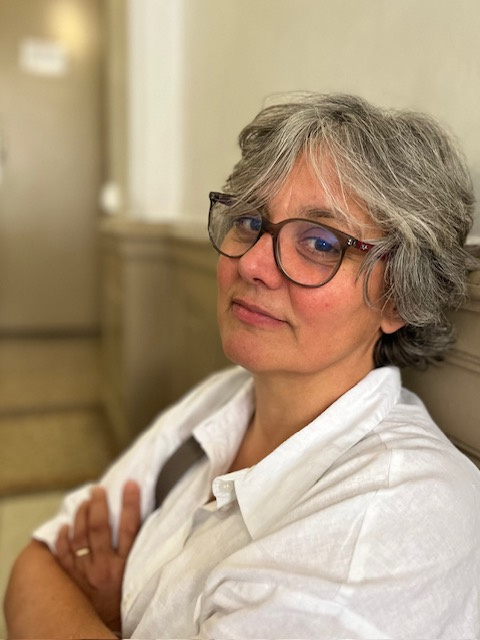

Un parcours de traversées,
et l'envie d'en faire un métier.
Coach professionnelle certifiée, praticienne en PNL. Ancienne consultante en organisation et systèmes d'information. Trois pays, un fil rouge : faire bouger ce qui le demande, sans rien abîmer.

Dix années de conseil en organisation et systèmes d'information, puis quinze années à traverser, en famille, des changements d'une autre ampleur. Dans tout cela, une même manière d'être au monde : observer, écouter, ressentir, relier, puis transformer ce qui peut l'être. C'est aujourd'hui cette matière qui nourrit mon écoute en séance.
Les dix premières années en entreprise m'ont appris la rigueur, le diagnostic, le respect des écosystèmes humains. Les quinze suivantes : deux ans à Montréal, six à Oxford, le retour en France, les rentrées des enfants dans des langues qui n'étaient pas la leur, les déracinements et les nouveaux ancrages. Une école du mouvement, vécue de l'intérieur.
Le coaching et la PNL sont arrivés comme une évidence, la place où ces deux fils, la méthode et la vie, pouvaient enfin se tresser. C'est aujourd'hui mon seul métier. Je le fais avec une certitude tranquille : chacun porte en soi ses propres réponses. Mon rôle : aider à ce qu'elles se déposent, qu'elles se voient, qu'elles s'entendent, qu'elles se mettent en mouvement, qu'elles se ressentent, qu'elles prennent vie.
Tout au long du chemin, je cherche avec vous un alignement simple et profond, la tête, le cœur et le corps qui parlent d'une même voix. Les pensées claires, les émotions reconnues, l'énergie disponible pour y aller. Ce que la PNL appelle l'attention à tous les canaux : ce qui se voit, ce qui s'entend, ce qui se ressent, ce qui se respire, ce qui se goûte. Tous ces langages sensoriels racontent, ensemble, ce qui veut advenir.
Formation & certifications
- Coach professionnelle certifiéeen exercice
- Praticienne PNLprogrammation neuro-linguistique
- Conseil en organisation & SI10 ans en entreprise
- Reconnaissance RQTHaccompagnements adaptés
Ce qui me guide
Je crois aux changements doux qui changent tout, ceux qui prennent l'enjeu au sérieux sans abîmer la personne, et dont l'impact se mesure dans la durée. À la créativité comme première ressource, à l'action comme antidote au doute, et à l'écoute (vraiment écouter, ce qui se dit, ce qui se montre, ce qui se ressent, ce qui se respire) comme la matière première du travail.
Je cherche avec vous un alignement simple et profond : la tête, le cœur et le corps qui parlent d'une même voix. Quand les pensées s'éclaircissent, que les émotions sont reconnues et que l'énergie redevient disponible, le mouvement, lui, devient possible. Je ne propose ni recette, ni méthode universelle. Juste un cadre, des outils éprouvés, et la patience nécessaire pour que ce qui doit advenir, advienne, à votre rythme.
Mes valeurs tiennent en quatre mots, ceux qui reviennent comme un battement : changement, impact, créativité, action.
Voir comment je travaille.
Découvrez les trois formats d'accompagnement et la méthode que je propose, pas-à-pas.